函館～層雲峡
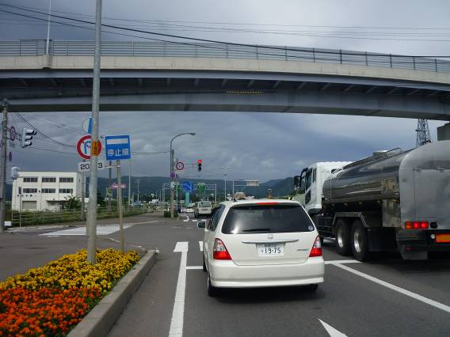
世話になったコージに別れを告げて函館を出発。少し雲行きがよくない。そして寒い。
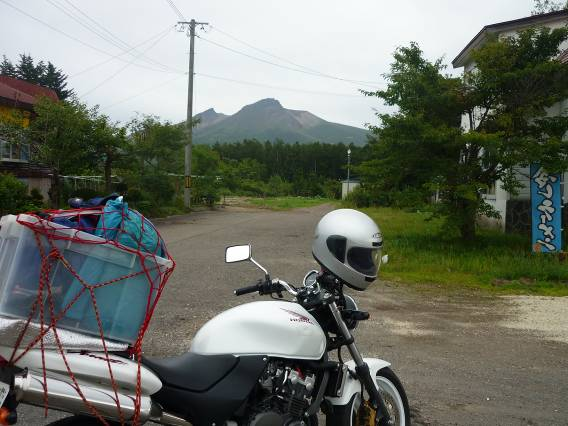
函館市外から5号線をひた走る。内浦湾に出る前に駒ケ岳が見えてきた。
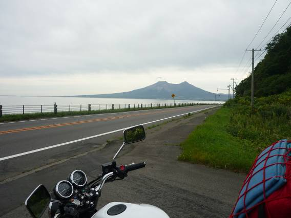
内浦湾から振り返って駒ケ岳を望む。独立した火山のようだ。
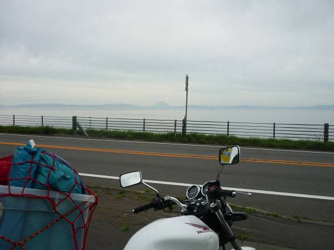
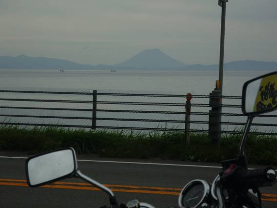
さらに、はるか遠方に羊蹄山を発見。形は富士山そのものである。
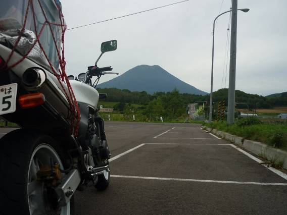
5号線を走り続け、羊蹄山の麓まで来た。形は富士山だが、山頂近くまで樹林で覆われているところは異なっている。
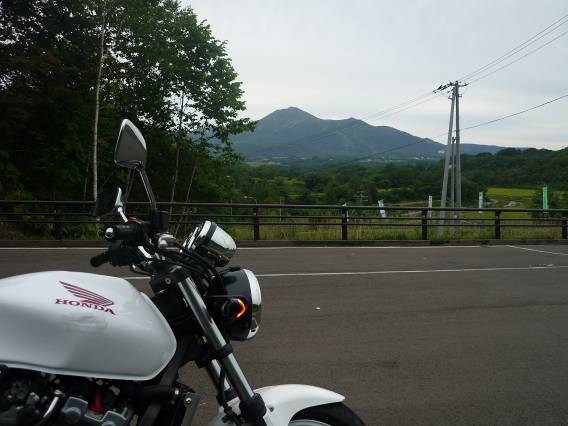
羊蹄山の反対側にはニセコの山が。こちらはすっかりスキーリゾートに開拓されてしまっている。冬にもう一度きて滑ってみたい。
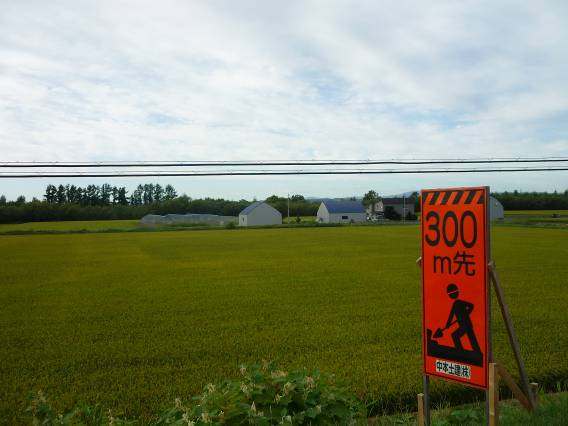
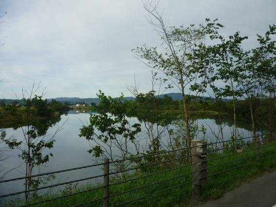
札幌周辺は高速を使ってパス。岩見沢のあたりから田園を望む。このあたりは平野が広がって田園風景が中心だ。市街地も転々としており、あまり大自然という雰囲気は感じられないが、それでもさえぎるものがあまり無いので北海道の広さは十分に感じることができた。
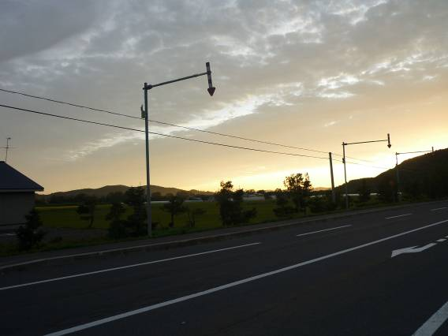
旭川を過ぎ、振り返ってみると日が沈もうとしていた。
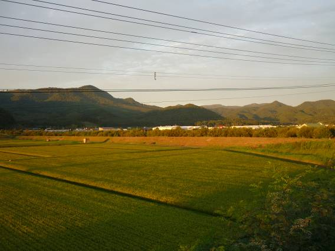
夕日に染まる田園風景。
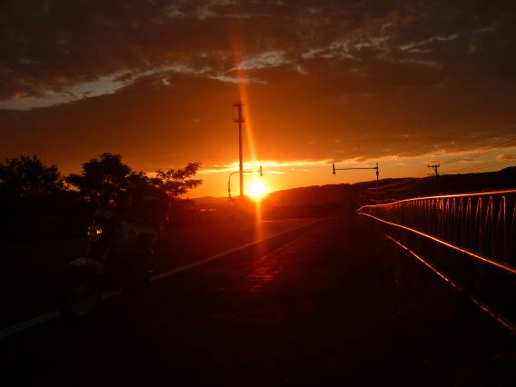
夕焼けがきれいだった。明日の晴れを予感させる。
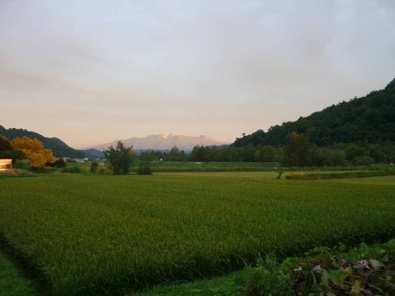
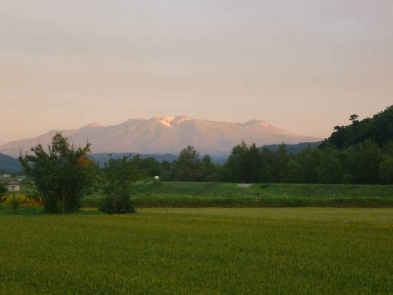
大雪山系を望む。ほんのり夕日に染まっている。山頂付近には氷河をまとっている。写真一番右の高峰がトムラウシだろうか。2009年夏、この辺り一帯で遭難者が相次いだ。懐も深く、魅力に満ちた山域ではあるが、それだけ自然も厳しいということなのだろう。
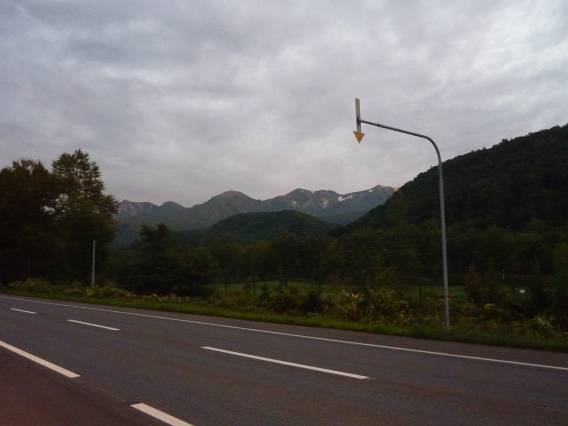
層雲峡手前から大雪を望む。見えているのは黒岳の一部だろうか。